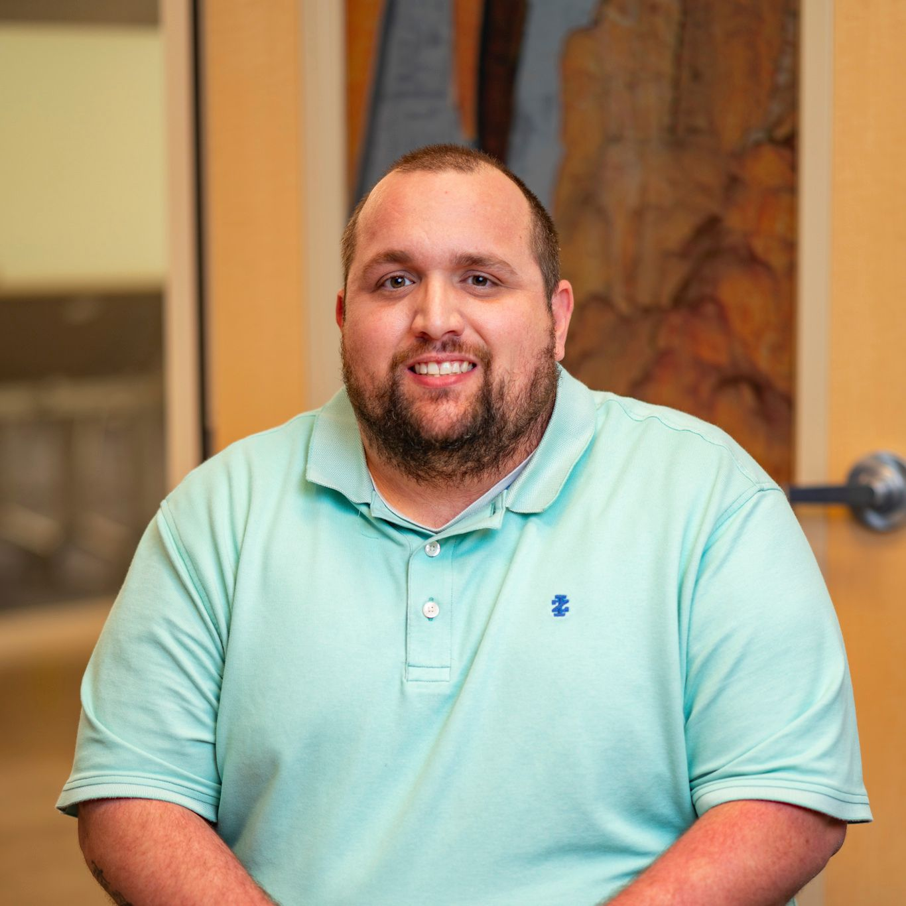

Bryan Wagner
Senior Trust & Safety & Cyber Risk Operations Analyst
CFE · CEH · CCCI
Fraud Investigation & AI-Driven Enablement

Transforming Trust & Safety through Data, Automation, and Investigation Excellence
CFE, CEH, and CCCI-certified security operations leader with 14+ years at Intuit who consistently finds what others miss and builds what doesn't exist yet.
Traced a P1 ATO campaign to a third-party platform through email header analysis when the source was unknown. Eliminated a 6,000+ alert takedown backlog that had no owner. Stood up a net-new frontline investigation team of 22 from scratch, hitting 99.3% service level and 108% call volume growth.
Built AI tools that now help 12+ T&S professionals produce structured career and performance work in a fraction of the time. The pattern is the same across all of it: identify the gap, own the fix, and leave something durable behind.
Expanding AI-driven investigative tooling, evolving the CAP PE QA program into an automated Cursor-powered scoring system, managing two direct reports, and serving as operational POC for 27 investigators across the CAP PE and Tech Support Fraud teams.
Core Competencies
- Fraud Investigation & Prevention
- Threat Intelligence & Incident Response
- SQL & Python Automation
- Service Delivery Leadership
- Cyber Risk Analysis
- Process Enablement & AI-Driven Security
- Account Takeover Analysis
- External Threat Takedowns
- Cross-Functional Coordination
Platforms & Infrastructure
AI & Automation
Career at Intuit
Lead member of the Investigations Enablement and Service Delivery team, focused on unifying global investigative operations, automating fraud workflows, and improving cross-functional collaboration. Operational POC for the 13-person CAP PE team and 14-person Tech Support Fraud team. Managing two CW direct reports.
Led automation of Notice of Change processes, saving $750K annually and eliminating 200+ FTE hours. Supported 127,000+ merchants during a critical incident, coordinating multi-team resolution within hours. Leveraged AWS, SQL, and Splunk to identify issues and escalate high-impact cases to engineering.
Advanced through four roles with increasing scope in fraud detection, risk operations, and support leadership. Contributed to Stripe Payments integration, Salesforce CRM migration, and early fraud mitigation frameworks. Recognized for excellence and leadership through multiple awards and accolades.
Credentials & Expertise
Certified Fraud Examiner
Association of Certified Fraud Examiners (ACFE)
Exp. June 2027
Certified Ethical Hacker
EC-Council · 90% Pass Rate
Exp. May 2027
Certified Cyber Crimes Investigator
International Association of Financial Crimes Investigators
Exp. Sept. 2028
B.S. Cybersecurity — Southern New Hampshire University
In Progress · Dean's List (C-1 & C-2 2026) · President's List (C-2 2026)
Selected Work
Trust & Safety Career Growth Partner
Designed and deployed a Claude-powered AI coaching tool enabling 12+ T&S professionals to produce rubric-aligned performance narratives, promotion packages, and peer feedback.
- 40–60% reduction in self-review drafting time
- Expanded structured career coaching access org-wide
- Built and deployed as a production Claude Project
External Threat Takedown Program
Led external threat takedown operations end-to-end across legacy and next-gen platforms, personally actioning 5,400+ alerts and eliminating a 6,000+ alert backlog.
- Established 2-business-day SLA where none existed
- Trained 5 analysts; built full platform migration SOP
- Coverage: domains, phishing, dark web, paid ad abuse
Work Radar Agent
Built an AI-driven workflow integrating Claude with Jira, Slack, Outlook, and Google Drive APIs to automatically surface untracked work signals and pre-populate tickets.
- 26 stories logged across 10 domains in one sprint
- On pace to formally track 500+ work items annually
- Closed gap between work performed and work recorded
CAP PE Team Build-Out & Operations
Built the Customer Account Protection PE team from zero and continues to serve as operational POC for the 13-person team, owning escalation workflows, quality oversight, training, and day-to-day coordination.
- 99.3% service level · NPS 37 · 1.2% abandonment
- 108% call volume growth from launch
- QA program now migrating to Cursor for automated scoring
P1 ATO Campaign Response
Served as originating analyst on a P1 security incident tied to a coordinated ATO campaign; owned investigation and cross-company coordination end-to-end from source identification through remediation.
- 957+ customers impacted; $800K+ payment exposure
- Traced origin via independent email header analysis
- Led collaborative takedown with Square/Block
Fraud Detection Dashboards
Built investigative dashboards in Databricks and Qlik (SQL, Python) tracking ATO incident volume, adversary campaign progression, and case resolution velocity.
- Always-on operational visibility for leadership
- Supported executive reporting during active incidents
- $750K+ annual savings via process automation
What Colleagues Say
"Bryan consistently demonstrates exceptional customer focus, combining deep understanding of ATO challenges with innovative process design. His visual process maps and automation frameworks have been instrumental in strengthening our fraud defenses."
"Bryan's leadership during the launch of the CAP ATO Front-Line Team set a new operational benchmark — 99.3% service level and a TNPS of 37. His SOP and infrastructure design doubled capacity while reducing fraud exposure."
"Bryan's forward-thinking innovation with GenAI has revolutionized self-reviews, cutting review time by 40–60% and improving alignment with promotion rubrics. His approach has reshaped how we work."
"Bryan's research skills with Databricks and Splunk were crucial in forming an answer for the customer. Bryan was instrumental in analyzing multiple reports on this case to help form the correct answer to the customer's concern."
"Bryan, when you joined the team you have been an absolute delight to work with. You are incredibly knowledgeable and willing to share that knowledge with everyone on the team. His leadership bridges silos and empowers our collective success."
"You took ownership of problems brought to your attention. This is especially true in the Zendesk space, where I've seen you manage complex relationships across teams with different interests and goals. You have also been proactive to point out where you can see things you are doing excellently and making the team stronger."
"Bryan is consistently proactive in troubleshooting the Zendesk alerts issue and your role as a mentor to team members showcases both your technical expertise and dedication to team development. By nurturing the professional growth of colleagues, Bryan exemplifies the kind of servant leadership that not only elevates individuals but also strengthens the entire team."
"You bring great energy and deep knowledge of Intuit products and processes into your training sessions. The content is clear, relevant, and informative, which helps learners quickly grasp key concepts. You are well-positioned to continue developing as a strong knowledge leader within the team."
Let's Connect
Open to conversations about security operations, fraud investigation, AI-driven enablement, and leadership opportunities.